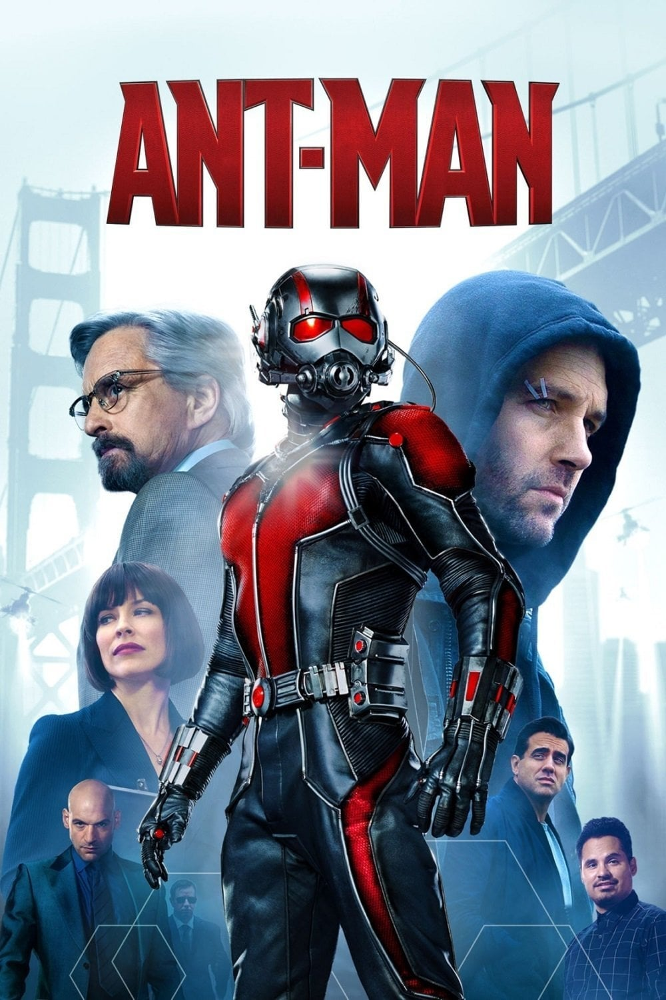

Мировая премьера: 17 июля 2015
Слоган: Рождённый ползать взлетит до небес.
Сюжет: Благодаря необычному высокотехнологичному костюму мелкий мошенник Скотт Лэнг получает способность уменьшаться в размере, но при этом сохранять свою силу. Под руководством изобретателя чудо-костюма, талантливого учёного Хэнка Пима, Скотт должен найти в себе силы стать настоящим героем и защитить мир от надвигающейся угрозы. Пим и Лэнг должны спланировать и устроить ограбление века, от которого зависит судьба человечества...
Режиссёр: Пейтон Рид
В основе: Комиксы о Человеке-Муравье (США, выходят с 1962, авторы – Стэн Ли, Ларри Либер и Джек Кирби)
Серия: Кинематографическая Вселенная Марвел
В ролях: |
Пол Радд | Скотт Лэнг / Человек-Муравей |
| Майкл Дуглас | Доктор Хэнк Пим | |
| Эванджелин Лилли | Хоуп Ван Дайн | |
| Кори Столл | Доктор Даррен Кросс / Жёлтый Шершень | |
| Майкл Пенья | Луис | |
| Бобби Каннавале | Джим Пакстон | |
| Тип "Ти Ай" Харрис | Дейв | |
| Энтони Маки | Сэм Уилсон / Сокол | |
| Эбби Райдер Фортсон | Кэсси Лэнг | |
| Давид Дастмалчян | Курт | |
| Вуд Харрис | Гейл | |
| Джуди Грир | Мэгги Лэнг | |
| Грегг Тёркингтон | Дейл | |
| Мартин Донован | Митчелл Карсон | |
| Хейли Этвелл | Агент Маргарет "Пегги" Картер | |
| Джон Слэттери | Говард Старк |
Бюджет: $ 130 млн.
Кассовые сборы в США: $ 180 млн.
Кассовые сборы в мире: $ 519 млн.
Продолжительность: 1 ч. 48 мин.
Рейтинг: 7.2